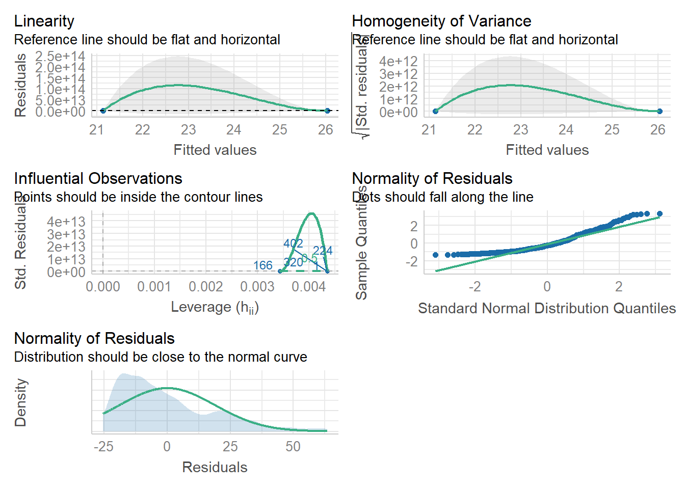
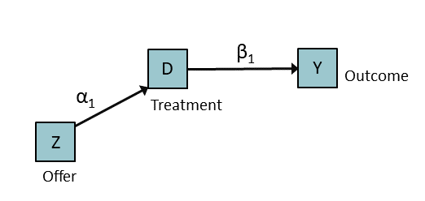
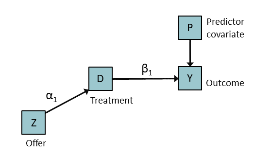

Part 4 Examples with Randomized Experiments
4.1 Objectives
- Analyze linear models that are presented in Table 4.1 in our text.
- Bootstrap confidence intervals corresponding with parametric analyses in Table 4.1.
- Estimate Average Treatment on the Treated (ATT).14
We will use the following packages: sem (Fox et al., 2020), ggplot2 (Wickham, Chang, et al., 2021), and Hmisc (Harrell, 2021). You can install them if they’re not already on your machine using code like this: install.packages("sem") and including in quotes the name of the package.
4.2 Preparation
Read in the data:
ny <- read.csv("Ch04_ny.csv")The examination step was demonstrated in the previous section with the same data set.
Let’s be sure we have created the factor variable, vouchF. Factor variables are good for t-tests and ANOVA because these models are designed to compare the means of categories, or levels, of a factor type of variable. Our original variable is voucher, which was coded as 0 for the no-voucher condition and 1 for the voucher-offered condition.
ny$vouchF <- factor(ny$voucher,
levels = c(0,1))
levels(ny$vouchF)## [1] "0" "1"We can add names to our levels so they are easier to interpret in the output. This also helps with plotting. We need to be sure the labels we are using are in the same order as our original levels, 0 and 1.
levels(ny$vouchF) <- c("NoVouch", "Voucher")
levels(ny$vouchF)## [1] "NoVouch" "Voucher"To recap, we have two versions of the treatment variable. One is numeric, voucher, and the other is a factor, vouchF. Many functions in R treat numeric and factor types of variables differently. Here is the output from the summary() function on the two columns of data:
summary(ny[, c("voucher", "vouchF")])## voucher vouchF
## Min. :0.0000 NoVouch:230
## 1st Qu.:0.0000 Voucher:291
## Median :1.0000
## Mean :0.5585
## 3rd Qu.:1.0000
## Max. :1.0000So, 291 families (\(55.85\%\) of the sample) received the treatment and 230 \((44.15\%)\) were in the control condition.
4.3 Analysis of Linear Models
Let’s fit parametric linear models, using a t-test and then regression. We can compare these results with those in Table 4.1 and with what we find in the second part of this section, on bootstrapping.
4.3.1 Independent samples t-test approach
Following along with Page 49, here is “Strategy 1.” We’re using the t.test() function. If we look at the help file for this function, we see that the var.equal = argument is set to FALSE by default. If we have good reason to believe that we have met this statistical assumption, we can change it to var.equal = TRUE, which is what the analysis in our text assumes:
t.test(post_ach ~ vouchF,
data = ny,
var.equal = TRUE) ##
## Two Sample t-test
##
## data: post_ach by vouchF
## t = -2.9112, df = 519, p-value = 0.003755
## alternative hypothesis: true difference in means between group NoVouch and group Voucher is not equal to 0
## 95 percent confidence interval:
## -8.204552 -1.592998
## sample estimates:
## mean in group NoVouch mean in group Voucher
## 21.13043 26.02921The difference between the two groups is \(21.13 - 26.029 = -4.899\), which is the parameter estimate. With \(519\) degrees of freedom, the t statistic is \(-2.91\), which, with a standard error of \(1.68\), yields a p-value of \(0.004\). In other words, there is evidence to reject the null hypothesis that the two groups are the same in their post-test scores. The voucher group had a higher score by about \(4.9\) points.
4.3.2 Simple Linear Regression
Here is “Strategy 2,” which is a simple linear regression. Compared to the t-test, it includes the same statistical assumptions and reaches the same estimates of the parameter and the test statistic. It uses a numeric variable as its predictor, voucher.
lm.out <- lm(post_ach ~ voucher, data = ny)Here, we’re using the lm() function, where “lm” stands for linear model. We save it to an object, such as lm.out, which we can then further analyze. For example, we can use the summary() function on that outputted object:
summary(lm.out)##
## Call:
## lm(formula = post_ach ~ voucher, data = ny)
##
## Residuals:
## Min 1Q Median 3Q Max
## -25.53 -15.03 -4.63 10.47 63.37
##
## Coefficients:
## Estimate Std. Error t value Pr(>|t|)
## (Intercept) 21.130 1.258 16.802 < 2e-16 ***
## voucher 4.899 1.683 2.911 0.00375 **
## ---
## Signif. codes: 0 '***' 0.001 '**' 0.01 '*' 0.05 '.' 0.1 ' ' 1
##
## Residual standard error: 19.07 on 519 degrees of freedom
## Multiple R-squared: 0.01607, Adjusted R-squared: 0.01417
## F-statistic: 8.475 on 1 and 519 DF, p-value: 0.003755In our regression, the coding for the treatment variable was 0 and 1, so the parameter estimate is the estimate of that observations coded as 1 compared to those coded as 0. The t-test difference is in the opposite direction (which some see as annoying), and reflects the ordering of the factors in that comparison—it looks like the Voucher group was the reference group in that model.
4.3.2.1 Stuff we can do with a model object
We can look at the help menu for lm() and see a list of the components within an object that contains the output from the lm() function. We can also look inside this output and see what attributes there are. Some functions we can use are str(), names(), and attributes(), which we won’t print here.
str(lm.out)
names(lm.out)
attributes(lm.out)
# printout suppressed.There are a lot of things inside this object. For instance, we can look at the parameter estimates, which are called coefficients:
lm.out$coefficients## (Intercept) voucher
## 21.130435 4.898775These were reported in our summary(lm.out) operation above, but the value of this is that we can extract data from an object and do stuff with it. Let’s extract the parameter estimate for the effect. Because it is the second value, we use 2. We use double brackets to avoid including the name attribute. We can store this in an object and use it later if we want to.
myeffect <- lm.out$coefficients[[2]]
myeffect## [1] 4.898775There are many ways to accomplish the same thing in R. The coef() function is another way to get the coefficients from a model object:
coef(lm.out)## (Intercept) voucher
## 21.130435 4.898775coef(lm.out)[[2]]## [1] 4.898775We will use this kind of indexing in later code.
We can also use the coef() function on the summary(lm.out) function to get the test statistics and p-values:
coef(summary(lm.out))## Estimate Std. Error t value Pr(>|t|)
## (Intercept) 21.130435 1.257590 16.802322 6.572258e-51
## voucher 4.898775 1.682719 2.911226 3.754896e-03my_t <- coef(summary(lm.out))["voucher", "t value"]
my_t## [1] 2.911226my_p <- coef(summary(lm.out))["voucher", "Pr(>|t|)"]
my_p## [1] 0.003754896These are handy for use in custom functions and for when we want to export these results to a csv file or save them in a table.
We will also use this kind of indexing in later code.
From our model object, we can also see each person’s residual. That is, the difference between their observed and predicted achievement score. Here are the first three students’ residual scores:
lm.out$residuals[1:3]## 1 2 3
## 61.86957 -17.13043 -22.52921Corresponding with this, we can use use the resid() function. Again, there are often multiple ways to accomplish the same thing in R.
resid(lm.out)[1:3]## 1 2 3
## 61.86957 -17.13043 -22.52921We can manipulate this information. Let’s take the first 5 students’ residuals and see what their voucher statuses and observed test scores were:
resids <- lm.out$residuals[1:5]
data.frame(ny[1:5, ], resids)## s_id voucher pre_ach post_ach vouchF resids
## 1 42 0 74.0 83.0 NoVouch 61.8695652
## 2 194 0 7.5 4.0 NoVouch -17.1304348
## 3 218 1 2.5 3.5 Voucher -22.5292096
## 4 261 1 0.0 26.5 Voucher 0.4707904
## 5 304 1 11.0 2.0 Voucher -24.0292096It looks like the first student scored much higher than expected by the model, but we can see that this student also had a really high pre-achievement test score.
We can also use some standard functions on the outputted objects from models in R. A useful one is the predict() function.15 This calculates the predicted value in Y given a set of new data that contains values for the parameters in our model. We can do this with new data, or we can use our existing data. Let’s use the first five students in our data set. We need the voucher and post_ach columns to have the same name as those in the statistical model. While we’re at it, let’s add these to our small data set of five people’s scores and residuals, just to see how this works:
preds <- predict(lm.out, ny[1:5, c("voucher","post_ach")])
data.frame(ny[1:5, ], preds, resids)## s_id voucher pre_ach post_ach vouchF preds resids
## 1 42 0 74.0 83.0 NoVouch 21.13043 61.8695652
## 2 194 0 7.5 4.0 NoVouch 21.13043 -17.1304348
## 3 218 1 2.5 3.5 Voucher 26.02921 -22.5292096
## 4 261 1 0.0 26.5 Voucher 26.02921 0.4707904
## 5 304 1 11.0 2.0 Voucher 26.02921 -24.0292096We can see that the residuals are indeed the difference between the observed and predicted scores:
Obs <- ny[1:5, "post_ach"]
Obs - preds## 1 2 3 4 5
## 61.8695652 -17.1304348 -22.5292096 0.4707904 -24.0292096Another function is confint(), which returns the confidence intervals of each of the parameters.
confint(lm.out)## 2.5 % 97.5 %
## (Intercept) 18.659842 23.601028
## voucher 1.592998 8.204552In R, there are packages available for further manipulation and analysis of the model object. For example, the lm.beta() function from the lm.beta package (Behrendt, 2014) returns the standardized versions of our parameters.
The performance package (Lüdecke et al., 2021) provides some nice functions and plots for checking model assumptions.
# install.packages("performance")
library(performance)
check_model(lm.out) 
Some useful functions in this package are check_homogeneity(), check_autocorrelation(), check_outliers(lm.out), and check_normality(lm.out).16
This section reveals what we can do with the output of the lm() function. We might not use these functions, but we can see how in R, we can go get what we need using base functions and pretty stuff from packages.
4.3.3 Multiple Linear Regression
Here is “Strategy 3” on Page 49. Now we have a predictor of the outcome variable that is independent of the voucher variable. That is, because the assignment to treatment or control was random, it is unrelated to the pre-test scores. The pre-treatment acheivement scores are excellent predictors to include in the model because they explain a lot of the residual variance in the model that otherwise they would not. Remember that first student in the data set—the one who had a really high pre-test score, and remember how big the residual for that observation was. It was huge! Now, with the pre-test explaining some of that variation in the post-test that is not explained by the treatment condition variable, we have increased statistical power because now we can focus on the variation after we have accounted for students’ pre-test scores.
Again, we use the lm() function. We add pre_ach, which is the pre-test variable, as a predictor:
lm2.out <- lm(post_ach ~ voucher + pre_ach, data = ny)summary(lm2.out)##
## Call:
## lm(formula = post_ach ~ voucher + pre_ach, data = ny)
##
## Residuals:
## Min 1Q Median 3Q Max
## -47.337 -9.533 -2.124 7.973 59.781
##
## Coefficients:
## Estimate Std. Error t value Pr(>|t|)
## (Intercept) 7.71888 1.16298 6.637 8.08e-11 ***
## voucher 4.09761 1.26873 3.230 0.00132 **
## pre_ach 0.68731 0.03454 19.897 < 2e-16 ***
## ---
## Signif. codes: 0 '***' 0.001 '**' 0.01 '*' 0.05 '.' 0.1 ' ' 1
##
## Residual standard error: 14.37 on 518 degrees of freedom
## Multiple R-squared: 0.4423, Adjusted R-squared: 0.4401
## F-statistic: 205.4 on 2 and 518 DF, p-value: < 2.2e-16Our residual variance is a lot lower, so our R2 is much higher, and our confidence intervals are narrower for our parameter of interest.
confint(lm2.out)## 2.5 % 97.5 %
## (Intercept) 5.434143 10.0036097
## voucher 1.605120 6.5900969
## pre_ach 0.619449 0.7551759summary(lm2.out)$r.squared ## [1] 0.4422944.4 Bootstrapping to Get Confidence Intervals
Be sure you install and load the boot package (Canty & Ripley, 2021).
library(boot)Let’s write a bare-bones bootstrap function.
bootm <- function(data, indices){
bootsample <- data[indices] # Create subsample from our bigger sample
return(mean(bootsample)) #Saves result of indexed bootsample.
}The line in our code that says bootsample <- data[indices] creates a subsample from our bigger analytic sample of data. The return(mean(bootsample)) saves the result of an analysis of this particular sample. R is for the the number of replications in the sampling process. The higher the number, the more stable the standard error will be (given our overall sample) but the more processing time it will require.
set.seed(123)
bootout <- boot(statistic = bootm, data = ny$post_ach, R = 2000)
bootout##
## ORDINARY NONPARAMETRIC BOOTSTRAP
##
##
## Call:
## boot(data = ny$post_ach, statistic = bootm, R = 2000)
##
##
## Bootstrap Statistics :
## original bias std. error
## t1* 23.8666 -0.01672265 0.8486997We can see that the mean of the original is the same as the mean of our analytic sample:
mean(ny$post_ach)## [1] 23.8666names(bootout)## [1] "t0" "t" "R" "data" "seed" "statistic"
## [7] "sim" "call" "stype" "strata" "weights"We can see the first 20 (out of 2000) bootstrapped means:
bootout$t[1:20] # ## [1] 23.24088 22.54990 22.74760 24.11420 23.00192 23.50576 23.36660 24.49424
## [9] 24.69866 24.58061 24.35029 23.82150 24.44626 21.92898 24.23512 23.00768
## [17] 23.03167 24.20441 23.51919 26.28599We see that there is some variation among these bootstrapped samples in their calculations of the means.
We can look at the mean of these means, using mean(bootout$t). The original mean plus the bias seems to give us this same value \(23.8666 + -0.01672265 = 23.84988\).
mean(bootout$t) ## [1] 23.84988The Percentile and BCa confidence intervals are very close.17
boot.ci(bootout)## Warning in boot.ci(bootout): bootstrap variances needed for studentized
## intervals## BOOTSTRAP CONFIDENCE INTERVAL CALCULATIONS
## Based on 2000 bootstrap replicates
##
## CALL :
## boot.ci(boot.out = bootout)
##
## Intervals :
## Level Normal Basic
## 95% (22.22, 25.55 ) (22.27, 25.50 )
##
## Level Percentile BCa
## 95% (22.23, 25.47 ) (22.26, 25.53 )
## Calculations and Intervals on Original ScaleRemember our previous section on creating a custom function to estimate the confidence intervals? Let’s use that again and then compare the results from that parametric statistics approach to this non-parametric approach:
myci(ny$post_ach)## N Var M SEm CI_lb CI_ub
## 521.000 368.982 23.867 0.842 22.213 25.520The output from the t.test() function on a single variable will also contain the parametric confidence interval:
t.test(ny$post_ach)##
## One Sample t-test
##
## data: ny$post_ach
## t = 28.36, df = 520, p-value < 2.2e-16
## alternative hypothesis: true mean is not equal to 0
## 95 percent confidence interval:
## 22.21333 25.51987
## sample estimates:
## mean of x
## 23.8666In other words, the confidence intervals from both approaches are similar.
4.4.1 The value of bootstrapping
Let’s try bootstrapping the median, for which the standard error is not estimated using a parametric approach. First, we create our custom function, with the median() function inside of it.18
bmed <- function(data, i){
bsmp <- data[i] # Our data are a single vector, so we don't use a comma in the brackets.
return(median(bsmp))
}Now, let’s put that function to use:
set.seed(123)
bmedout <- boot(statistic = bmed, data = ny$post_ach, R = 2000)
bmedout##
## ORDINARY NONPARAMETRIC BOOTSTRAP
##
##
## Call:
## boot(data = ny$post_ach, statistic = bmed, R = 2000)
##
##
## Bootstrap Statistics :
## original bias std. error
## t1* 18 0.31725 1.205489boot.ci(bmedout)## Warning in boot.ci(bmedout): bootstrap variances needed for studentized
## intervals## BOOTSTRAP CONFIDENCE INTERVAL CALCULATIONS
## Based on 2000 bootstrap replicates
##
## CALL :
## boot.ci(boot.out = bmedout)
##
## Intervals :
## Level Normal Basic
## 95% (15.32, 20.05 ) (15.00, 19.50 )
##
## Level Percentile BCa
## 95% (16.5, 21.0 ) (16.0, 20.5 )
## Calculations and Intervals on Original ScaleThis demonstrates how bootstrapping can be used to estimate the confidence intervals around parameter estimates.
4.4.2 Another way to bootstrap the standard error of mean differences
Let’s write another bootstrap function to compare two means:
We can use the by() function. First, let’s create a function
with our original data (which won’t give us the std. error).
These two lines of code return the same result. We’ll use the
the second one—the one with indexing—because it works well with custom functions:
by(ny$post_ach, ny$voucher, mean)## ny$voucher: 0
## [1] 21.13043
## ------------------------------------------------------------
## ny$voucher: 1
## [1] 26.02921by(ny[,"post_ach"], ny[,"voucher"], mean)## ny[, "voucher"]: 0
## [1] 21.13043
## ------------------------------------------------------------
## ny[, "voucher"]: 1
## [1] 26.02921mbylist.post <- by(ny[,"post_ach"], ny[,"voucher"], mean)
mbylist.post # It's a list## ny[, "voucher"]: 0
## [1] 21.13043
## ------------------------------------------------------------
## ny[, "voucher"]: 1
## [1] 26.02921 mby.post<- unlist(mbylist.post) # Let's unlist it
mc.post <- mby.post[1]
mt.post <- mby.post[2]
mydiff.post <- mt.post - mc.post
mydiff.post## 1
## 4.898775Here’s the same function, but with the variables replaced by arguments (and shorter object names). In the line bsmpl <- data[i, ], notice that we now use indexing with two coordinates (i.e., notice the comma in [ , ]). This is because our source of the data is a data frame (or matrix).
mgdiff <- function(data, y, grp, i){
bsmpl <- data[i, ]
mby <- unlist(by(bsmpl[,y], bsmpl[,grp], mean))
mc <- mby[1]
mt <- mby[2]
bdiff <- mt-mc
return(bdiff)
}Let’s put this function to use. Notice that we are specifying the statistic as our custom function, mgdiff, specifying the arguments that are within our custom function (data =, y =, and grp =), and the number of replications.
set.seed(123)
(bootdiff <- boot(statistic = mgdiff,
data = ny,
y = "post_ach",
grp = "voucher",
R = 2000)) ##
## ORDINARY NONPARAMETRIC BOOTSTRAP
##
##
## Call:
## boot(data = ny, statistic = mgdiff, R = 2000, y = "post_ach",
## grp = "voucher")
##
##
## Bootstrap Statistics :
## original bias std. error
## t1* 4.898775 -0.005157426 1.707047boot.ci(bootdiff, type = c("perc","bca"))## BOOTSTRAP CONFIDENCE INTERVAL CALCULATIONS
## Based on 2000 bootstrap replicates
##
## CALL :
## boot.ci(boot.out = bootdiff, type = c("perc", "bca"))
##
## Intervals :
## Level Percentile BCa
## 95% ( 1.619, 8.304 ) ( 1.711, 8.417 )
## Calculations and Intervals on Original ScaleLet’s compare this with the CI in the regular two-group t-test. The confidence intervals of the t-test are very close (though they’re negative because the reference group is being coded automatically to be the one factor level that is later in the alphabetical order (“Voucher” comes after “NoVouch”).19
t.test(post_ach ~ vouchF, data = ny, var.equal = T)##
## Two Sample t-test
##
## data: post_ach by vouchF
## t = -2.9112, df = 519, p-value = 0.003755
## alternative hypothesis: true difference in means between group NoVouch and group Voucher is not equal to 0
## 95 percent confidence interval:
## -8.204552 -1.592998
## sample estimates:
## mean in group NoVouch mean in group Voucher
## 21.13043 26.029214.4.3 Simple regression
Here is another way to compare means, this time using the lm() function. Here, we’re calling our custom function my.boot() just to help us remember that we’ll use it in a bootstrap. We have an argument, my.lm =, which we’ll use within our linear regression model in our custom function—that is, with the lm() function. Notice that within the lm() function, our data = argument specifies the boot sample, which we’ve given the name bsmpl.
my.boot <- function(my.lm, data, i){
bsmpl <- data[i, ]
bout <- lm(my.lm, data = bsmpl)
return(coef(bout))
}Now let’s use our custom function in a boot() function to get the confidence intervals.
set.seed(123)
(bootdiff2 <- boot(statistic = my.boot,
my.lm = post_ach ~ voucher,
data = ny,
R = 2000)) ##
## ORDINARY NONPARAMETRIC BOOTSTRAP
##
##
## Call:
## boot(data = ny, statistic = my.boot, R = 2000, my.lm = post_ach ~
## voucher)
##
##
## Bootstrap Statistics :
## original bias std. error
## t1* 21.130435 -0.016290627 1.211736
## t2* 4.898775 -0.005157426 1.707047boot.ci(bootdiff2, type = c("perc","bca"), index = 2)## BOOTSTRAP CONFIDENCE INTERVAL CALCULATIONS
## Based on 2000 bootstrap replicates
##
## CALL :
## boot.ci(boot.out = bootdiff2, type = c("perc", "bca"), index = 2)
##
## Intervals :
## Level Percentile BCa
## 95% ( 1.619, 8.304 ) ( 1.711, 8.417 )
## Calculations and Intervals on Original ScaleWe can compare the confidence interval from the lm() function to our bootstrapped confidence interval. We can see that our bootstrapped confidence interval is close to but not exactly the same as that from our parametric analysis.20
lm.out <- lm(post_ach ~ voucher, data = ny)
confint(lm.out)## 2.5 % 97.5 %
## (Intercept) 18.659842 23.601028
## voucher 1.592998 8.2045524.4.4 Multiple regression
To parallel our earlier parametric analysis in which we regressed the post-achievement scores on the treatment condition and the pre-achievement test scores, let’s use our custom function, my.boot(), again with the post_ach ~ voucher + pre_ach linear model.
set.seed(123)
(bootstat <- boot(statistic = my.boot,
my.lm = post_ach ~ voucher + pre_ach,
data = ny,
R = 2000)) ##
## ORDINARY NONPARAMETRIC BOOTSTRAP
##
##
## Call:
## boot(data = ny, statistic = my.boot, R = 2000, my.lm = post_ach ~
## voucher + pre_ach)
##
##
## Bootstrap Statistics :
## original bias std. error
## t1* 7.7188766 -0.0051154397 1.01381963
## t2* 4.0976086 -0.0240771377 1.26814470
## t3* 0.6873125 0.0001913063 0.03961673boot.ci(bootstat, type = c("perc","bca"), index = 2)## BOOTSTRAP CONFIDENCE INTERVAL CALCULATIONS
## Based on 2000 bootstrap replicates
##
## CALL :
## boot.ci(boot.out = bootstat, type = c("perc", "bca"), index = 2)
##
## Intervals :
## Level Percentile BCa
## 95% ( 1.550, 6.522 ) ( 1.548, 6.507 )
## Calculations and Intervals on Original ScaleWithin the boot.ci() function (which is part of the boot package), there’s an argument for index =, which we’ve set as 2 here because we want the second parameter from the output, which is Voucher in our data set, and which corresponds with t2* in the previous output from the boot() function.21
If we wanted the confidence intervals of the third parameter’s estimate, corresponding with the pre_ach covariate, we could use this code:
boot.ci(bootstat, type = c("perc","bca"), index = 3)## BOOTSTRAP CONFIDENCE INTERVAL CALCULATIONS
## Based on 2000 bootstrap replicates
##
## CALL :
## boot.ci(boot.out = bootstat, type = c("perc", "bca"), index = 3)
##
## Intervals :
## Level Percentile BCa
## 95% ( 0.6085, 0.7682 ) ( 0.6107, 0.7686 )
## Calculations and Intervals on Original ScaleWe can compare to the results of the parametric analysis that we did earlier (re-printed here):
lm2.out <- lm(post_ach ~ voucher + pre_ach, data = ny)
confint(lm2.out)## 2.5 % 97.5 %
## (Intercept) 5.434143 10.0036097
## voucher 1.605120 6.5900969
## pre_ach 0.619449 0.7551759We see that the confidence intervals from the bootstrap method approximate those from the parametric linear model.
4.4.5 Summary on Bootstrapping
Bootstrapping is useful for getting confidence intervals. Because we have a large set of model outputs, each based on a sample, we can ask R to rank the outputs of a specific parameter and return the 2.5 and 97.5 percentiles of this ranking. One caveat to using bootstrapping is that our estimates of the confidence intervals are only as good as our sample is.
A Caution. As is the case with parametric statistical analyses, if we have a biased analytic sample—one that does not represent the population—we have a biased estimate of the confidence intervals. Bootstrapping does not fix bad sampling from the population.
Some Things to Remember. We need to tell the boot.ci() function which parameter to do this with, so we specify the index = argument when we run the boot.ci() function. This returns the row number in the bootstrapped stats, which were printed (and saved) from the boot() function. In our example, for the intercept, we’d specify index = 1, for the pre_ach coefficient, we’d specify index = 3.
Types of Confidence Intervals. The type = refers to the type of confidence intervals. “bca” stands for “bias corrected and accelerated” which adjusts for any skewness in the set (rather than using the raw percentile). Both are valuable. I tend to report both but use the most conservative one (the one with wider bands). We can also evaluate our parametric analysis by comparing the bca results to our parametric linear model confidence intervals; if they are similar, we can probably bet that our parametric model had no problems with the normality assumption. We might report both confidence intervals and comment on whether they’re similar, whether they both do or do not include zero, so we can claim statistical significance, and whether one is dramatically wider or skewed than the other. If our statistical assumptions for our parametric model were not met, we should place more confidence in the bootstrapped results.
Bootstrapping is flexible because we can use it to estimate parameters that do not have an established (or an easy to use) method for calculating standard errors. In this course, for instance, we will use this with two-stage-least squares or to estimate the confidence interval in a difference in differences kind of approach.
4.5 Estimating the Average Treatment on the Treated (ATT)
This is a hypothetical demonstration in which 20% of the students offered the treatment do not actually use the voucher. As Murnane and Willett (2011) described it, “…about one in five families that received vouchers ended up not sending their child to private school” (p. 47).
4.5.1 Artificially Introducing No-shows
To see how this works, let’s artificially introduce no-shows into our data. In real life, we would not do this because the no-shows would be the ones who did not show up for the treatment that was offered. W are assuming that the no-shows represent never-takers in the population and that there is an equal proportion of never takers in the treatment and control groups.22
Let’s create a new variable, called takeup. Let’s create it so that 80% of the kids who were offered the treatment (Voucher = 1) are coded as actually using the treatment (takeup = 1). The other 20% of those offered the treatment are coded as takeup = 0, meaning that they were “no-shows”; they didn’t use the voucher. All of the control-group kids will also be coded as takeup = 0 because they were not given the opportunity to take the voucher.
Let’s first create a takeup variable and code everyone as 0. In the next steps, we will randomly select 80% of the treatment group and replace their 0 with 1. Here, we’re using the replicate function, rep(); the first argument is what to replicate and the second one is the number of times to replicate it. We’re replicating the value 0, \(521\) times because that is how many rows are in the data frame (from the nrow() function).
ny$takeup <- rep(0, nrow(ny))Let’s remember how many observations were offered the treatment and control conditions.23
with(ny, table(voucher)) ## voucher
## 0 1
## 230 291Let’s calculate 80% of number who were offered the voucher. We could have just calculated \(.80 * 291\) by hand but to generalize this to other code, we’ll use the nrow() to count the number of observations that are coded as Voucher = 1. The round() function helps us to make the proportionate number a whole number (instead of \(232.8\) kids—this is of course for ethical reasons, to avoid cutting one of the children into two parts).
n_offer <- nrow(ny[ny$voucher == "1", ])
n_take <- round(0.8 * n_offer)
n_take## [1] 233This is the number of students who took up the offer. We’ll use this number (stored in the n_take object) when we subsequently randomly sample from all of the persons in our analytic sample who were offered the voucher.
When we randomly sample, we draw the index of their observation. For instance, if we had randomly sampled 2 rows from our data frame, such as rows 42 and 12, here’s what we’d see:
my2randnums <- c(42,12)
ny[my2randnums , ]## s_id voucher pre_ach post_ach vouchF takeup
## 42 1235 1 25.5 21.5 Voucher 0
## 12 392 0 17.0 13.0 NoVouch 0Let’s randomly sample from the numbers \(1\) to \(291\), which is the number of people offered the treatment. The size of this random sample will be our n_take number, \(233\). The replace = FALSE argument specifies that once an observation is selected, we do not throw it back into the original sample for re-sampling; this is sampling without replacement.
vg_took_index <- sample(1:n_offer,
size = n_take,
replace = FALSE)This is just a random sample of numbers. We’ll use these as indexes in the sub-sample of rows who received the offer of treatment.
Because we plan to sample from only those people who were offered the voucher, we need to take a few extra steps:
- Isolate our data to include only those who were offered the voucher.
- Randomly draw \(233\) observations from this subset (i.e., 80%).
- Change the values of the
takeupvariable for this 80% of our Voucher people to be1instead of0.
So, let’s take our subset of voucher-offered observations and save them to a temporary data frame, called vg.24 (We actually don’t need to use a temporary data frame—this is for ease of demonstration; the shorter code is just below.)
vg <- ny[ny$voucher == 1, ] # Voucher-group subsetLet’s use those random numbers we earlier created as indexes in our vg data frame. In other words, let’s take only the people in the row number that is present in our vg_took_index and then change their takeup score from 0 to 1:
vg[vg_took_index, "takeup"] <- 14.5.1.1 Tables and Proportions
Let’s look at the result using the table() function to tabulate the number of people coded as 0 and 1 in our temporary data frame:
with(vg, table(takeup))## takeup
## 0 1
## 58 233We can also calculate the proportion of people in each group using the prop.table() function around this with(table()) function:
prop.table( with(vg, table(takeup)) )## takeup
## 0 1
## 0.1993127 0.8006873We see that close to 80% are coded as 1.
4.5.1.2 Reassigning values for a subset of people
We could have merged that vg data frame with the original ny data frame, but we’d have to be careful with the takeup column because it differs for our subset. There’s a shorter way. We can subset our data frame, then we can subset that subset. We can do this with indexing. So, instead of using our temporary data frame, vg, let’s use the original data frame with the subset and then assign a 1 to these people’s takeup score.
ny[ny$voucher == 1, ][vg_took_index, "takeup"] <- 1So, the ny[ny$voucher == 1, ] subsets the data based on offer, and this is further subsetted into rows that have the same index based on our set of random numbers vg_took_index. We also are examining only the takeup column. Then, we change their score to 1.
Let’s double-check that this worked by creating a cross-tabulation of the offer and takeup variables. For this, we use the table() function on the two variables with our data frame, ny.
with(ny, table(voucher, takeup))## takeup
## voucher 0 1
## 0 230 0
## 1 58 2334.5.1.3 Compliance Table
Let’s save this to an object, comp, which is short for compliance. We’re generating a compliance table.
(comp <- with(ny,table(voucher,takeup)))## takeup
## voucher 0 1
## 0 230 0
## 1 58 233There are 58 no-shows, whom we assume are never-takers.
We can create a proportion table from this, and set the margin = 1, which is across rows.25 This way it is the proportion of the voucher who took it up:
comp.prop <- prop.table(comp, margin = 1)
round(comp.prop, 3) # rounding the proportions so they are easy to see## takeup
## voucher 0 1
## 0 1.000 0.000
## 1 0.199 0.801When we estimate the average treatment on the treated effect (ATT, also labeled as TOT), we are interested in those people who were assigned to and received the treatment. We use this cell from our compliance table, or rather the proportion version of it, as the denominator in the Bloom’s (2006) Equations 8 and 9 for the estimate of the treatment on the treated and its respective standard error,
\[\begin{equation} \widehat{TOT} = \frac{\bar{Y}_T - \bar{Y}_C}{(\bar{D}|Z = 1)} \tag{4.1} \end{equation}\]
\[\begin{equation} se(\widehat{TOT}) = \frac{se(\bar{Y}_T - \bar{Y}_C)}{(\bar{D}|Z = 1)} \tag{4.2} \end{equation}\]
(ExpectedD_givenZ <- comp.prop[2, 2]) ## [1] 0.80068734.5.1.4 Local Average Treatment Effect
If we were interested in the local average treatment effect (LATE), which is also called the complier average causal effect (CACE) by some researchers, we also account for the always-takers—people who would take the treatment even if they weren’t given the offer. The proportion of crossovers from the control-group assignment (\(Z\)) to the treatment (\(D\)) represents this proportion that is assumed to be equally present in both levels of the assignment variable. So, LATE is an estimate of the causal effect on the compliers.
With LATE, we compute the difference in treatment probabilities and use that as the denominator. In our artificially manipulated data set, because we have \(0\) cross-overs from the control group, the LATE and ATT estimates are the same.
(prop.diff_LATE <- comp.prop[2, 2] - comp.prop[1, 2]) ## [1] 0.8006873Foreshadowing the next part of this lesson. This difference can also be estimated by regressing Z on D. This is the first stage of the two-stage least squares approach, which is next.
summary(lm(voucher ~ takeup, data = ny))##
## Call:
## lm(formula = voucher ~ takeup, data = ny)
##
## Residuals:
## Min 1Q Median 3Q Max
## -0.2014 -0.2014 0.0000 0.0000 0.7986
##
## Coefficients:
## Estimate Std. Error t value Pr(>|t|)
## (Intercept) 0.20139 0.01760 11.44 <2e-16 ***
## takeup 0.79861 0.02632 30.34 <2e-16 ***
## ---
## Signif. codes: 0 '***' 0.001 '**' 0.01 '*' 0.05 '.' 0.1 ' ' 1
##
## Residual standard error: 0.2987 on 519 degrees of freedom
## Multiple R-squared: 0.6394, Adjusted R-squared: 0.6387
## F-statistic: 920.4 on 1 and 519 DF, p-value: < 2.2e-16Let’s remember the results of our intent to treat (ITT), which is the ATE of the offer of treatment: This is the same as Table 4.1’s results in the book:
out.itt <- summary(lm(post_ach ~ voucher, data=ny))
coef(out.itt)## Estimate Std. Error t value Pr(>|t|)
## (Intercept) 21.130435 1.257590 16.802322 6.572258e-51
## voucher 4.898775 1.682719 2.911226 3.754896e-03Let’s extract the ATE from the regression model’s summary.26
ITT.est <- coef(out.itt)["voucher","Estimate"]And, let’s extract its standard error:
ITT.se <- coef(out.itt)["voucher","Std. Error"] Let’s calculate the ATT (also called TOT, for treatment on the treated) and its standard error:
(ATT <- ITT.est/ExpectedD_givenZ)## [1] 6.118212(ATT.se <- ITT.se/ExpectedD_givenZ)## [1] 2.101593If we were interested in LATE, we would use the difference in proportions:
LATE <- ITT.est/prop.diff_LATE
LATE.se <- ITT.se/prop.diff_LATEFrom these estimates and the standard error, we can estimate the test statistic (an approximation of a Wald estimator in instrumental variable estimation, Wald, 1940), confidence intervals, and the p-value if we want to conduct a statistical significance test.
4.5.1.5 Two-stage Least Squares
We will use two-stage least squares later in the course when we use instrument-variable estimation. We can also use it to estimate the average treatment on the treated effect. There are two stages, one for each equation in the link between the offer, which is our exogenous assignment variable, \(Z\), to the treatment, \(D\), and then to the outcome variable, \(Y\).

In our model, the offer is voucher, the treatment is takeup, and the outcome is post_ach. In the first stage, we are regressing \(D\) on \(Z\):
\[\begin{equation} D_i = \alpha_{0} + \alpha_{1}Z + \delta_i \text{,} \tag{4.3} \end{equation}\]
or, with our variables,
\[ \text{Takeup}_i = \alpha_{0} + \alpha_{1}\text{Voucher} + \delta_i \text{.}\]
In other words, take-up is predicted by the offer. Because both \(Z\) and \(D\) are dichotomous, coded as \(0\) and \(1\), the coefficient \(\alpha_1\) is the estimated proportion of takeup that were offered the voucher, which we had artificially set up to be \(.80\).
In the second stage, we regress \(Y\) on \(\widehat{D}\), which is the predicted value of \(D\) from the first stage:
\[\begin{equation} Y_i = \beta_{0} + \beta_{1}\widehat{D} + \epsilon_i \text{,} \tag{4.4} \end{equation}\]
or, with our variables, \[ \text{Post_ach}_i = \beta_{0} + \beta_{1}\widehat{\text{Takeup}} + \epsilon_i \text{,}\] The estimate of the average treatment on the treated is \(\beta_{1}\).
Two assumptions. Beyond the usual statistical assumptions of regression, we assume that there are no defiers in our population—that is, that there are no people who would opt to take the treatment only if they were offered the control and would avoid treatment if they were offered the treatment. Another way to say this is we are assuming monotonicity. We can think of monotonicity as being the assumption that the assignment variable pushes people toward treatment in one direction only (Angrist & Pischke, 2015). If there is reason to argue that this assumption cannot be met, our premise that the proportion of no-shows in the treatment represents the never-takers and that the proportion is, in expectation, the same in the control does not hold. Nor would our premise about the cross-overs representing always-takers. That is, no-shows and cross-overs could be defiers rather than their respective never-takers and always-takers. In this example, it seems far-fetched that there exist families who would deliberately avoid private schools if they were offered the voucher and would send their kids to private schools only if they were not offered the voucher. By way of reasoning, we can probably assume that monotonicity is intact.
The second assumption is that the exclusion principle is in place. This means that people’s potential outcomes do not depend on whether they were assigned to treatment or control. That is, that a person’s potential score on \(Y\) does not depend on their assignment to \(Z\). In this randomized experiment, this is defensible because \(Z\) is, by nature of its randomness, unrelated to any other variable—at least in expectation.
4.5.1.6 Using the sem package for 2SLS
To estimate the ATT, we will use the tsls() function from the sem package (Fox et al., 2020). Let’s bring it into the library.
library(sem)With the tsls() function, the first formula is the second stage, post_ach ~ takeup, followed by a comma and the first stage, which includes the formula operator, ~, and the offer. This will estimate the ATT from the treatment, which is in turn predicted by the offer.
summary(tsls(post_ach ~ takeup, ~ voucher,
data = ny))##
## 2SLS Estimates
##
## Model Formula: post_ach ~ takeup
##
## Instruments: ~voucher
##
## Residuals:
## Min. 1st Qu. Median Mean 3rd Qu. Max.
## -26.75 -14.63 -5.13 0.00 10.37 65.37
##
## Estimate Std. Error t value Pr(>|t|)
## (Intercept) 21.130435 1.266661 16.68200 < 2.22e-16 ***
## takeup 6.118212 2.116751 2.89038 0.0040089 **
## ---
## Signif. codes: 0 '***' 0.001 '**' 0.01 '*' 0.05 '.' 0.1 ' ' 1
##
## Residual standard error: 19.2098663 on 519 degrees of freedomWe can include the pre_ach as a covariate. This makes the package worth our while!

Notice that in the formula for this model, we include the predictor covariate in both stages.
\[ \text{Takeup}_i = \alpha_{0} + \alpha_{1}\text{Voucher} + \alpha_{2}\text{Pre_ach} + \delta_i \text{.}\]
\[ \text{Post_ach}_i = \beta_{0} + \beta_{1}\widehat{\text{Takeup}} + \beta_{2}\text{Pre_ach} + \epsilon_i \text{,}\]
summary(tsls(post_ach ~ takeup + pre_ach, ~ voucher + pre_ach,
data = ny))##
## 2SLS Estimates
##
## Model Formula: post_ach ~ takeup + pre_ach
##
## Instruments: ~voucher + pre_ach
##
## Residuals:
## Min. 1st Qu. Median Mean 3rd Qu. Max.
## -48.496 -9.328 -2.064 0.000 7.819 59.855
##
## Estimate Std. Error t value Pr(>|t|)
## (Intercept) 7.6447550 1.1829145 6.46264 2.3775e-10 ***
## takeup 5.1120842 1.5912364 3.21265 0.001397 **
## pre_ach 0.6911110 0.0347098 19.91112 < 2.22e-16 ***
## ---
## Signif. codes: 0 '***' 0.001 '**' 0.01 '*' 0.05 '.' 0.1 ' ' 1
##
## Residual standard error: 14.4490703 on 518 degrees of freedomNotice that even though the point estimate of \(5.112\) is lower than that of the model without the predictor \((6.118)\), the standard error is lower \((1.591)\), making it more precise and resulting in a test statistic that is higher \((3.213)\) than that of the model that did not have this covariate \((2.89)\).
So, in our model, with the pre-achievement covariate serving as a predictor of post-achievement, the average effect of the treatment o the treated ATT (also called TOT) was \(5.112\). This is a higher estimate than the average treatment effect of the intent to treat (ITT), which was \(4.899\), as we saw in our regression model with pre_ach as the predictor (as reported in Murnane & Willett, 2011, Table 4.1, p. 49).
References
Average treatment on the treated is sometimes abbreviated as ATT and sometimes as TOT.↩︎
The
lm.out$fitted.valueswill also give the predicted values as will thefitted()function.↩︎Remember that when we have a small sample size, these tests of assumptions in which we argue for the null hypothesis lose their credibility.↩︎
BCa stands for bias-corrected and accelerated boostrap intervals. This is a correction for the proportion of bootstrapped samples that contain a parameter estimate that is less than teh observed parameter estimate in our overall sample.↩︎
In this function, we’re using
ias the argument name instead of spelling outindex. Also, as in the previous example withdata[index], the data that we will perform this function on are a single vector. So, when we use the function, we don’t use a comma in the brackets, which would be reserved for data that are a matrix or data frame. For example, in our use of this function, it will bedata = ny$post_achin the code.↩︎We can change the orders of the levels in a factor so that the reference group is the
NoVouchgroup. An easy way is to assign reordered names of the levels to thelevels()of the variable, as inlevels(ny$vouchF) <- c("Voucher", "NoVouch"). The spelling of the factor levels must match those already specified in the factor.↩︎Generally, we don’t need to use bootstrapping when we can do a parametric analysis, but this is to demonstrate how it works and how bootstrapped confidence intervals are based on random subsampling, which therefore results in confidence intervals that are close to but never (or hardly ever) the same as the confidence intervals from a parametric analysis.↩︎
The first parameter is the intercept, the second is the coefficient for the second term in the regression model, and so forth.↩︎
This assumes there are no defiers in the sample—people who would not take the treatment if they were offered it but who would take the treatment if they were not offered it.↩︎
We could also use
table(ny$voucher)instead ofwith(ny, table(voucher)). The latter provides an output that is easier to read.↩︎Instead of
ny[ny$voucher == 1, ], we could have used thesubset()function, as invg <- subset(ny, voucher == 1).↩︎The
vouchervariable was the first one in ourtable()function above,with(ny,table(voucher,takeup)), which made it the row in our output.↩︎We could also use numeric indexing for
coef(out.itt)["voucher","Estimate"]. Becausevoucheris the second row in thiscoef()result andEstimateis the first column, we could writecoef(out.itt)[2,1].↩︎